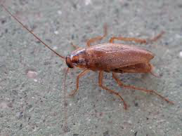
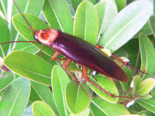
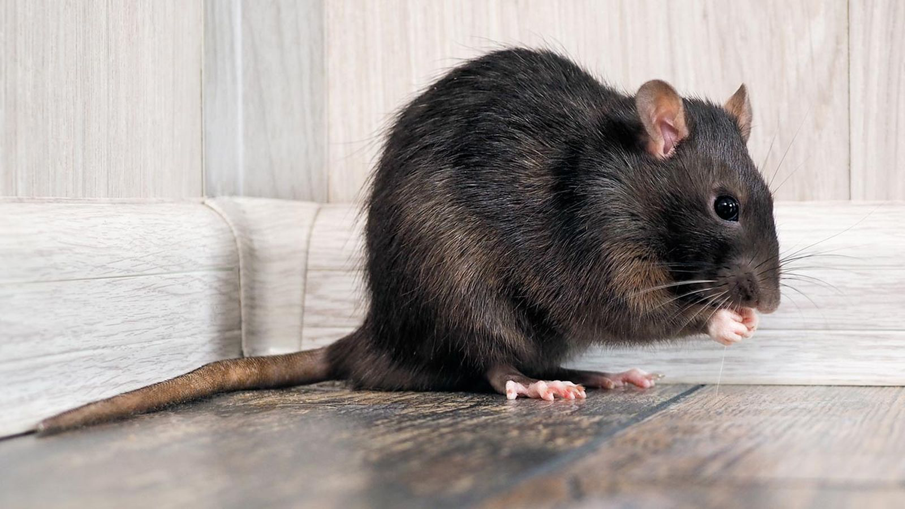
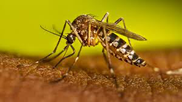

Nivel de Riesgo Local
Cargando
Focos Cercanos
En vivo
Radio de 1 km · últimas 72h
Clima Actual
Satélite
Probabilidad de Generación de Plagas
Cálculo basado en precursores cercanos (basura, fugas) y condiciones climáticas actuales.
Favorecido por Fugas de agua y calor.
Favorecido por Basura Orgánica.
Favorecido por Basura y Baldíos.
Explora el Mapa Interactivo
Visualiza los polígonos de riesgo y la ubicación exacta de los focos de infección reportados en tu ciudad.
Mapa Espacial de Focos Activos
Reportes vivos (últimas 72h) y polígonos de riesgo basal
Condiciones de Propagación
Guía de identificación y prevención de principales plagas locales

Cucaracha Alemana
Propagación
Requiere ambientes cálidos, húmedos y con acceso cercano a comida y agua. Se propagan rápidamente en cocinas, despensas, motores de electrodomésticos (refrigeradores, microondas) y baños. Tienen una tasa de reproducción sumamente alta.
Prevención
- Limpieza profunda de grasa en estufas.
- No dejar trastes sucios ni comida expuesta en la noche.
- Sellar grietas en azulejos y zoclos.

Cucaracha Americana
Propagación
Prefieren lugares oscuros, cálidos y con mucha humedad, como sótanos, drenajes, alcantarillas, tuberías y registros registros sanitarios. Suelen ingresar a las viviendas desde el exterior buscando alimento, especialmente basura en descomposición.
Prevención
- Colocar mallas en coladeras y resumideros.
- Reparar fugas de agua y goteras.
- Mantener la basura exterior en contenedores herméticos.

Rata
Propagación
Proliferan en áreas con acumulación excesiva de basura, escombros, madera apilada y alcantarillas abiertas. Necesitan una fuente constante de agua y alimento. Crean madrigueras subterráneas o en techos.
Prevención
- Eliminar acumulación de escombros y cajas viejas.
- No dejar alimento de mascotas en patios por la noche.
- Sellar agujeros en paredes mayores a 2 cm.
Ratón
Propagación
Buscan refugio en interiores, especialmente cuando baja la temperatura. Anidan en espacios pequeños. Se reproducen a un ritmo alarmante si tienen acceso a migajas, semillas o cereales.
Prevención
- Guardar granos y cereales en frascos de vidrio.
- Sellar grietas muy pequeñas (pueden pasar por huecos de 6mm).
- Mantener despejadas las bases de los muebles.

Mosco del Dengue
Propagación
Su condición vital de propagación es el agua limpia y estancada. La hembra deposita sus huevos en las paredes de recipientes con agua. Predominan en climas cálidos y zonas urbanas.
Prevención
- Aplicar la regla: "Lava, tapa, voltea y tira".
- Evitar acumulación de agua en llantas o recipientes.
- Cambiar el agua de floreros y bebederos seguido.
Centro de Alertas Tempranas
Intervenciones no invasivas (Data-Driven)
Catálogo de Soluciones
Aquí encontrarás productos, biopesticidas ecológicos, y servicios profesionales recomendados específicamente para tu nivel de riesgo y tipo de plaga.